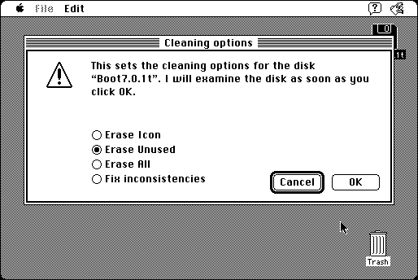

Download
foldericoncleaner202.zip (115K) Folder Icon Cleaner 2.0.2 repackaged into a zipped hfs disk image and checksum file. The disk image can be mounted with Mini vMac.
foldericoncleaner202.bin (111K) Folder Icon Cleaner 2.0.2 in the original format.
copyright: Fabrizio Oddone
mod date: Aug 26, 1996
license: shareware
from url :
Folder Icon Cleaner
“Lets you correctly get rid of those space and time wasting custom icons”. For “System 7 or later”.

If you find these downloads useful, please consider helping the Gryphel Project, which hosts them.
Here are the md5 checksums for the downloads, signed with Gryphel Key 5:
--------- GRY SIGNED TEXT --------- c85f92cf10895dec868dcb43723f1181 foldericoncleaner202.zip 5daf248122ade62a17b15abfc1126868 foldericoncleaner202.bin ------- BEGIN GRY SIGNATURE ------- Gry/4Xa8CFcUzxdN/EBfQRcOUHazKfsouNaYjnRRtNOckjWQ5Dv0Pd2BUSVUJ7RP Sr+jBVotFj/7dfHnWTOWuCOIquKLInbwkYi+kM2Cr9dfk4/g80vtvzqdS3jp+fVm 4Hl6Kiq8l/jZwyeit/07EONy0DYVHVsW2iJxLG0Hiq9sYIzjMVbNydTm4GpWGqMD -------- END GRY SIGNATURE --------